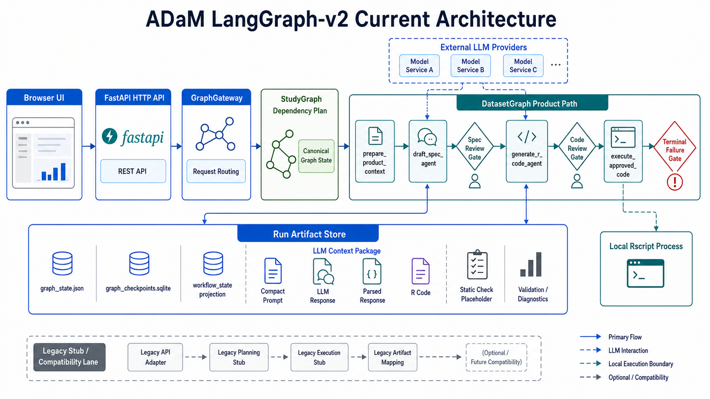

1. 一句话总览
当前系统的本质是：本地浏览器 UI + FastAPI 后端 + LangGraph 编排 + LLM 生成 spec/code + 本地 R 沙盒执行。
用户上传材料
SDTM、正式 spec、reference ADaM、define.xml、legacy SAS/R code。系统先把它们整理到一个本地 study workspace，并按角色扫描。
系统生成中间产物
如果没有正式 spec，先让 LLM 根据 SDTM 元数据、legacy SAS、define、reference ADaM 形态生成 draft spec，必须由用户批准。
本地执行和审计
生成的 R code 要先人工批准，再用本地 Rscript 执行。输出、代码、prompt、response、validation、compare 都写入 run 目录。
finalize-inputs → draft spec review → generate-code → code-review → execute-approved-code。
POST /runs 对真实 LLM/R 生成已经被封住，避免绕过审核闸门。
GraphGateway 写入 canonical
graph_state.json 和 graph_checkpoints.sqlite，再投影成旧 UI 仍需要的
workflow_state.json。不过，人工审核仍主要由显式 API step 驱动，还没有完全变成 LangGraph 原生
interrupt/resume UI。
2. 用户看到的产品流程
| UI 动作 | 后端 API | 做了什么 |
|---|---|---|
| Use My Study Files | POST /product-workspace | 创建默认本地 workspace，避免用户先手动选路径。 |
| Upload SDTM / Spec / Reference / Define / Legacy | POST /studies/files | 保存文件，按角色放入 canonical folders，然后重新扫描。 |
| 选择 output | POST /runs/prepare | 生成依赖计划，不生成代码，不执行 R。 |
| Finalize Inputs / Draft Spec | POST /runs/{run}/datasets/{dataset}/finalize-inputs | 确认上传完成：有正式 spec 就放行；没有 spec 就生成 draft spec 并要求审核。 |
| Approve Draft Spec | POST /runs/{run}/datasets/{dataset}/draft-spec-review | 把 draft spec 标记为本 run 可用的 approved draft spec，并绑定当前输入 fingerprint。 |
| Generate R Code | POST /runs/{run}/datasets/{dataset}/generate-code | 调用 LLM 生成 R code，只生成不运行，并写 static check placeholder。 |
| Approve And Run Locally | POST /code-review + POST /execute-approved-code | 先记录代码审核，绑定 code hash 和输入 fingerprint，再用本地 Rscript 执行。 |
| Batch run endpoint | POST /runs | 保留给 stub/批处理骨架；真实 LLM/R 生成会被拒绝，必须走上面的分步审核流。 |
3. FastAPI UI 当前真实状态
当前 UI 不是 Shiny，也不是独立前端工程。它是 FastAPI 返回的一页 HTML/JS，代码在
src/adam_agent/api/web.py，入口是 GET /。
它现在能做什么
- 创建默认本地 workspace，或加载根目录 demo study。
- 按角色上传文件：SDTM、Spec、Reference ADaM、Define、Legacy code。
- 扫描输入并展示文件状态、格式、行数/列名、legacy code 中识别到的 ADaM token。
- 推断 target candidates，例如从 spec 文件名、reference ADaM、legacy code 中看到 ADAE/ADDM/ADLB。
- 选择一个 active target，走 prepare plan、finalize inputs、draft spec review、generate code、approve and run。
- 展示 generated table、reference table、compare、downloads 和 advanced audit artifacts。
它现在还不是完整多 target UI
selectedTargets()当前只返回[selectedTarget]，也就是一次只主动处理一个 target。- 虽然 UI 内部有
generatedByDataset、reviewByDataset、executionByDataset等 per-dataset map，但当前主操作仍围绕 single active target。 - 切换 target 时，UI 会尽量恢复该 dataset 的前端状态；但这不是完整的 LangGraph 多 dataset 批处理看板。
- Dataset execution cards 更像依赖计划和状态面板，不等于每个 dataset 都在图内独立 interrupt/checkpoint。
| UI 内部状态 | 意义 | 现实边界 |
|---|---|---|
selectedTarget | 当前正在操作的一个 ADaM target。 | 目前不是多选批量执行。 |
targetCandidates | 从 spec/reference/legacy code 推断出来的可选 ADaM。 | 只是候选，不代表系统已经能生成全部 target。 |
draftSpecByDataset | 保存本页面会话中某 dataset 的 draft spec 响应。 | 真正持久化依赖后端 runs/{run_id}/specs/ 和 workflow state。 |
generatedByDataset | 保存某 dataset 的生成代码响应。 | 页面刷新后需要从后端 artifact/review summary 重新恢复。 |
tablePages / compareResults | 前端缓存表格分页和 compare 结果。 | CSV 浏览较完整，sas7bdat 主要靠 R/haven profile 和下载路径支持。 |
invalidateUiStateAfterInputChange() 清空 plan、draft spec、generated code、review、execution 等前端状态。
后端同时会更新 input fingerprint，并把已有 run 标为 stale。这样用户补传 SAS/define/spec 后，不应该继续沿用旧计划或旧审批。
300 秒，max_tokens 是 4096。API key 只用于这次请求，不写入项目配置文件。
/llm/test-connection 只发送一句连接测试文本，不发送 study 数据。
4. GraphGateway 与 Service Gate
目前产品安全边界由两层共同完成：src/adam_agent/api/service.py 负责把 UI 操作拆成显式步骤，
src/adam_agent/graph/gateway.py 负责把这些步骤写回 canonical graph state，并生成旧 UI 可读的 workflow projection。
因此它已经比早期单纯的 workflow_state.json 侧车更接近 LangGraph-v2 的产品化路径。
| GraphGateway 动作 | 当前作用 | 写入/校验内容 |
|---|---|---|
start_dependency_plan |
启动或刷新 study-level dependency plan，并合并已有 dataset 进度。 | graph_state.json、graph_checkpoints.sqlite、workflow_state.json projection。 |
record_draft_spec_generation / record_draft_spec_review |
记录 draft spec 生成和人工审批状态。 | 绑定 input fingerprint、draft spec hash、review decision、当前 interrupt。 |
record_code_generation / record_code_review |
记录 LLM code artifact 和人工 code review。 | 绑定 code hash、static check hash、spec hash、dependency artifact hash。 |
validate_code_review / record_execution |
执行前复核审批是否仍匹配当前输入和 artifact，执行后记录成功、失败或 terminal failure。 | 校验 fingerprint/hash，不匹配就阻断；执行结果写回 dataset state。 |
| 保护点 | 当前代码行为 | 为什么重要 |
|---|---|---|
真实 POST /runs 被阻断 |
execution_mode=llm_downstream_provider 或 llm_downstream_r_sandbox 时写入 split_flow_required 并返回错误。 |
避免用户一键调用真实 LLM 后直接执行 R，绕过 draft spec/code review。 |
| approved draft spec 防过期 | 批准前检查 draft spec 是否带 input fingerprint；生成代码前检查 approved draft spec fingerprint 是否等于当前输入。 | 避免旧数据/旧 SAS/旧 reference 下批准的推导说明被复用到新输入。 |
| code approval 防过期 | 执行前检查 code review 中的 input fingerprint、code hash、static check hash、spec hash 和 dependency artifact hash。 | 避免用户批准后代码或输入又变了，但系统仍执行旧审批。 |
| terminal failure 明确失败 | R 失败或输出不合格时写 diagnostics 和 validation，状态为 terminal_failure。 |
即使磁盘上有半成品 CSV，也不会被当成可用 ADaM 预览/下载。 |
| static check placeholder | 生成代码后写 static_checks/{dataset}_static_check.json，目前状态是 warning-only。 |
先保留规则校验接口，未来接入 ADaM/CDISC/P21 检查；当前不能夸大为真实合规检查。 |
5. 全局概览与系统分层

GraphGateway，由 StudyGraph 做依赖计划，DatasetGraph product path 处理 context、draft spec、code generation、code review 和本地 Rscript 执行；下方 run artifact store 保存 canonical graph state、workflow projection、LLM 上下文、代码、静态检查占位和 validation/diagnostics。
图中的 review gate 表示当前由 FastAPI/GraphGateway 记录的人类审核点；它们还不是浏览器直接操作的 LangGraph 原生 interrupt/resume。
本地优先
workspace、上传文件、生成代码、输出 ADaM、审计 JSON 都在本地目录内。R 沙盒也是本地 Rscript。
LLM 可以是 mock、OpenAI-compatible、OpenAI、Anthropic、DeepSeek、Qwen，也可走自定义 base URL 中转。
边界隔离
LLM provider、R execution、input scanning、dependency planning 都有独立模块。以后替换 LLM 或增强 R 沙盒，不应改 UI 主流程。
当前 canonical 状态以 graph_state.json 和 graph_checkpoints.sqlite 持久化；workflow_state.json 是给旧 UI/API 查询使用的 projection。
API 层
app.py 只负责 HTTP 路由和错误转换。真正的业务判断放在 service.py，例如能不能生成 draft spec、能不能执行 approved code。
Graph 层
GraphGateway 已把产品路径接到 graph-owned state；dataset_graph.py 也已有 prepare_product_context、draft_spec_agent、generate_r_code_agent、execute_approved_code 等产品节点。仍未完成的是把浏览器审核体验完全迁移成 LangGraph 原生 interrupt/resume。
6. LangGraph 图结构
StudyGraph：研究级编排
DatasetGraph：单个 ADaM 数据集执行
GraphGateway 记录为 graph state。
因此当前状态应理解为“产品路径已图状态化，但 HITL 交互尚未完全原生 interrupt 化”。
| 图/节点 | 当前实现 | 当前产品真实使用方式 |
|---|---|---|
StudyGraph |
创建依赖计划、判断 runnable/blocked datasets、按批次并发调用 DatasetGraph、写 dependency plan 和 audit manifest。 | POST /runs 的 stub/兼容路径可调用；UI 的 prepare plan 则在 service 层直接调用同一套 dependency planner/resolver。 |
DatasetGraph.prepare_dataset |
根据 execution_mode 分流到 product prepare/generate/execute、LLM downstream 或旧 stub。real_adsl_minimal 已从 DatasetGraph 退休。 |
真实 UI split flow 不通过固定 ADSL template；ADSL 和 ADAE/ADCM/ADLB 一样，走 spec/code-review/execute gate。 |
prepare_product_context / draft_spec_agent |
整理 context，缺正式 spec 时生成 draft spec artifact，并把 review-required 状态交给 gateway 记录。 | /finalize-inputs 和 /draft-spec 走这条产品节点路径。 |
generate_r_code_agent / execute_approved_code |
生成 R code、LLM response、parsed response、static check placeholder；执行前检查 review/hash/fingerprint/dependency artifact。 | /generate-code、/code-review 和 /execute-approved-code 使用这条产品路径。 |
repair_code_stub / revise_spec_stub |
stub 图内可演示 code_error/spec_error 回路。 | 真实 split flow 的 execute-approved-code 当前失败后返回 terminal_failure，不自动进入无限 repair。 |
compile_study_graph(checkpointer=None) |
接受可选 checkpointer 参数。 | GraphGateway 当前用 LangGraph checkpointer 编译 StudyGraph，同时另写 graph_state.json/graph_checkpoints.sqlite 做产品级持久化。 |
7. Spec 闸门：为什么不能直接生成代码
当前系统强制区分三种 spec：
| 类型 | 来源 | 是否可直接用于 R code 生成 | 意义 |
|---|---|---|---|
input_spec | 用户上传的正式 spec 文件 | 可以 | 系统认为它是用户提供的 approved contract。 |
draft_spec | LLM 根据 SDTM/reference/define/legacy evidence 生成 | 不可以 | 只是候选推导说明，必须人工审核。 |
approved_draft_spec | 用户在本 run 中批准 draft spec | 可以，但只限本 run | 不是生产规则，只是当前运行的受控中间产物。 |
8. 依赖关系如何决定
依赖关系不是写死为 “ADAE 一定依赖 ADSL”。当前策略是：先看用户证据，没证据就不发明依赖。
| 优先级 | 来源 | 说明 |
|---|---|---|
| 1 | input_spec | 正式 spec 是最高优先级。若 spec 明确引用 ADaM 上游，则建立依赖。 |
| 2 | legacy SAS/R code | 例如 from addata.addm 会推断 ADAE -> ADDM。SAS libref 如 adout_hw.adae 不应被当成 dataset。 |
| 3 | define.xml | 从 define 的描述或引用中找 ADaM 依赖线索。 |
| 4 | reference_adam | 判断某个依赖 ADaM 是否已经由用户提供，并用于输出形态/compare；不单独决定推导逻辑。 |
| 5 | 无证据 | 不再自动补 ADSL。系统提示需要人工确认是否有上游 ADaM 输入。 |
ADAE.sas 中 from addata.addm 表示 ADAE 使用 ADDM；而 adout_hw 是输出目录 libref，不是依赖数据集。
如果依赖数据集已经在 reference_adam 里，或者已经在本 run 输出目录里，系统会把它标为可用。
如果缺失，UI 会提示用户提供 existing dataset、批准系统生成、跳过 target 或暂停。
addm.sas7bdat 放入 reference_adam/，
那么 ADDM 可作为 ADAE 生成时的输入数据使用。但这仍不表示 ADDM 的内容可以反推 ADAE 的全部推导规则。
9. PSY201 demo 的真实数据流
PSY201 demo 是当前最接近真实项目形态的测试输入。它不是“用户上传 CSV + 已有 spec”的简单 demo，而是： SDTM 为 sas7bdat、reference ADaM 为 sas7bdat、没有正式 spec、只有 legacy SAS 程序作为推导证据。
用户上传到 SDTM
PSY201/Data/SDTM/*.sas7bdat
例如 AE、DM、EX、LB、VS 等 SDTM 域。系统把它们放入 input_sdtm/。
用户上传到 Reference ADaM
PSY201/Data/AD/*.sas7bdat
例如 ADSL、ADAE、ADCM、ADDM 等已存在的 ADaM。它们主要用于依赖可用性、输出形态和 compare，不是推导权威。
用户上传到 Legacy Code
PSY201/Primary/HW/AD/Program/*.sas
SAS 程序用于提取依赖线索和推导线索。比如某程序读取 addm，说明目标 ADaM 可能依赖 ADDM。
| 输入角色 | PSY201 文件形态 | 系统当前如何使用 | 不能做什么 |
|---|---|---|---|
input_sdtm |
*.sas7bdat |
用 Rscript + haven::read_sas() 读取列名、行数、样本行，作为 LLM 生成 draft spec/code 的来源数据。 |
如果本机 R 没有 haven，只能显示 not_previewed 或 metadata 不完整，LLM 上下文也会变弱。 |
reference_adam |
*.sas7bdat |
判断用户是否已经提供某个上游 ADaM；作为输出形态参考和最终 compare 基准。 | 不能被当作“最好的推导逻辑”。不能只靠 reference ADaM 反推出正式 derivation。 |
legacy_code |
*.sas |
扫描 SAS 程序中的 data、set、merge、from、join 等语句，提取依赖和推导线索。 |
当前不是完整 SAS 编译器，不保证理解所有 macro、动态 libref 或复杂条件逻辑。 |
input_spec |
PSY201 当前没有上传正式 spec | 缺失时触发 LLM 生成 draft_spec，用户审核通过后才允许生成 R code。 |
不能跳过 draft spec 审核直接生成/执行代码。 |
PSY201 合理测试输入
D:/Archive/Research/Projects/ADaM_Shiny-ADaM_Shiny_experimental/demo-data/PSY201/Data/SDTM上传到 SDTM。D:/Archive/Research/Projects/ADaM_Shiny-ADaM_Shiny_experimental/demo-data/PSY201/Data/AD上传到 Reference ADaM。D:/Archive/Research/Projects/ADaM_Shiny-ADaM_Shiny_experimental/demo-data/PSY201/Primary/HW/AD/Program上传到 Legacy Code。- 不上传 spec 时，必须走 draft spec 生成和审核。
PSY201 运行前提
- Rscript 路径需要可用，例如
C:/Dev/R-4.5.2/bin/Rscript.exe。 - 本机 R 需要安装
haven，否则 sas7bdat 只能被识别为 runtime-supported，但无法完整 preview/profile。 - legacy SAS 程序只作为证据文本，不会被系统直接执行。
- 如果 LLM 生成的 R code 没正确使用
haven::read_sas()和给定 read_path，R 沙盒会失败。
10. LLM 与 R 沙盒
LLM 输入如何构造
- 扫描 SDTM/reference ADaM 的列名、行数、样本行。
.sas7bdat通过本地 Rscript +haven::read_sas()读取元数据。- 加入 target spec 或 approved draft spec。
- 加入依赖解析结果、runtime contract、数据暴露策略。
- 再用 prompt compaction 生成紧凑 prompt。
LLM 输出要求
- 生成代码必须返回严格 JSON。
- JSON 中包含
dataset、r_code、assumptions、risk_points、used_inputs、expected_outputs。 - 解析失败会被记录为
llm_output_parse_error。 - R 执行失败可生成 repair prompt，触发一次修复尝试。
terminal_failure，即使磁盘上存在半成品 CSV，UI/API 也不会把它当成可用 generated ADaM 预览或下载。
| LLM provider | 当前接口 | 说明 |
|---|---|---|
mock | 本地 deterministic mock | 无 API key，无网络。用于流程测试，不代表真实推导。 |
openai / openai-compatible | /chat/completions | 接受任意 model id 字符串，例如用户配置的 gpt-5.5；不会被旧模型白名单卡住。 |
deepseek / qwen | OpenAI-compatible adapter | 用各自默认 base URL，也可显式传入中转 URL。 |
anthropic / claude | Anthropic Messages API | 使用 /v1/messages，需要相应 API key。 |
| 自定义中转站 | base_url + allow_custom_base_url | 必须带审批人字段；call record 会标记 external_relay 和 custom_base_url_approved。 |
runs/{run_id}/code/，输出要求写到 runs/{run_id}/outputs/{dataset}.csv。
它不是 Docker/系统级沙盒。生成代码理论上仍可能尝试读外部路径或执行危险操作；解析器会拦截部分明显危险代码，但生产级隔离仍应后续用容器或更严格的进程限制实现。
11. 文件与审计产物
每个 study workspace 大致结构如下：
| 产物 | 作用 | 是否给用户看 |
|---|---|---|
draft_spec.json | LLM 生成的候选 spec，必须审核。 | 是，UI 表格展示变量/来源/推导/风险。 |
approved_spec.json | 本 run 允许使用的 draft spec。 | 部分展示。 |
build_*.R | LLM 生成的 R 程序。 | 是，代码审核页展示。 |
*.csv | R 沙盒生成的 ADaM 输出。 | 只有最近 validation 通过时，才表格预览和下载。 |
*_compare_report.json | 与 reference ADaM 的结构/单元格差异。 | 是，compare 页展示。 |
graph_state.json | GraphGateway 持久化的 canonical graph state，包含 study/dataset 状态、interrupt、review、hash/fingerprint。 | 高级视图/调试；GET /runs/{run}/graph-state 可读。 |
graph_checkpoints.sqlite | GraphGateway 每次关键节点更新时写入的 graph state checkpoint ledger。 | 调试/恢复依据；当前仍是产品级 ledger，不等同于完整浏览器原生 interrupt UI。 |
workflow_state.json | 由 canonical graph state 投影出的旧 UI/API 查询状态。 | 高级视图/调试。 |
workflow_checkpoints.sqlite | workflow projection 的历史快照。 | 兼容和调试。 |
manifest.json | study-level 审计索引。 | 高级视图/下载。 |
graph_state.json 是当前 LangGraph-v2 产品路径的主状态；workflow_state.json 是为了现有 UI 和旧接口继续工作而生成的 materialized projection。
两套 SQLite ledger 记录历史快照。它们让进程重启后可以追踪状态，但浏览器人工审核体验仍没有完全变成 LangGraph 原生 interrupt/resume。
12. 当前完成和限制
已经具备
- 本地 workspace 和按角色上传。
- CSV 和 sas7bdat 输入扫描；sas7bdat 可通过 R/haven 读取。
- 上传后自动更新 input fingerprint，并将已有 run 标为 inputs changed/stale。
- dependency plan：从 input_spec、legacy SAS、define 推断上游 ADaM。
GraphGateway已把 prepare、draft spec、code generation、code review、execution 记录到 canonical graph state。graph_state.json、graph_checkpoints.sqlite和workflow_stateprojection 已形成产品级状态持久化路径。- DatasetGraph 已有
prepare_product_context、draft_spec_agent、generate_r_code_agent、execute_approved_code产品节点。 - PSY201 形态输入：SDTM sas7bdat、reference ADaM sas7bdat、legacy SAS 程序。
- 无 spec 时生成 draft spec，并强制人工批准。
- draft spec/code approval 绑定当前输入 fingerprint；代码审批绑定 code hash。
- 执行前还会检查 static check hash、spec hash 和 dependency artifact hash。
- 真实 LLM API 接口和自定义 OpenAI-compatible base URL。
- 生成 R code 后必须人工批准再执行。
- 本地 Rscript 执行、输出预览、下载、reference compare。
- 失败输出不会被当成可用 generated ADaM。
仍是 MVP
- 不是 CDISC/P21 全量规则引擎。
- PSY201 无正式 spec 时，draft spec/code 是 LLM 根据证据生成的候选结果，需要人工判断。
- reference ADaM 不能单独决定推导逻辑，只能辅助比较和形态判断。
- legacy SAS 扫描不是完整 SAS 解释器，对 macro 和动态 libref 只做有限解析。
- sas7bdat profile 依赖本机 Rscript 和
haven包。 - 下游 ADaM 的真实质量主要依赖正式 spec 和 LLM 代码质量。
- UI 当前仍是 single active target，不是完整多 target 批处理工作台。
- UI 的 study graph 和手动单 target 流程还没有完全合并成一个无缝多 target 产品。
- DatasetGraph 内还有早期 stub 节点，产品路径和兼容路径仍并存。
- 人工审核还没有完全变成 LangGraph 原生 interrupt/resume UI。
- static ADaM/CDISC 检查只是 placeholder，不是规则引擎。
- compare 还是初版 CSV 结构/单元格比较；sas7bdat 表格浏览和完整临床统计验证仍有限。
- 本地 SQLite checkpoint 写入依赖当前 workspace 的 SQLite 写能力；若工作盘环境不支持，会影响 gateway/workflow checkpoint 测试。
13. 关键文件索引
| 文件 | 作用 |
|---|---|
src/adam_agent/api/web.py | 浏览器 UI，上传、选择 target、finalize、approve、generate、run、preview。 |
src/adam_agent/api/app.py | FastAPI 路由定义。 |
src/adam_agent/api/service.py | 核心 service gate：workspace、upload、plan、finalize inputs、draft spec、generate code、execute。 |
src/adam_agent/graph/gateway.py | GraphGateway：产品路径的 graph state 入口，记录 dependency plan、draft spec、code review、execution，并维护 graph checkpoint ledger。 |
src/adam_agent/schemas/graph_state.py | StudyRunState、DatasetRunState、InterruptState、HumanCommand 等 canonical graph state schema。 |
src/adam_agent/graph/workflow_state.py | 把 canonical graph state 投影成旧 UI/API 使用的 workflow_state，并维护 projection checkpoint ledger。 |
src/adam_agent/graph/study_graph.py | StudyGraph：依赖计划、批次执行、结果聚合、审计 manifest。 |
src/adam_agent/graph/dataset_graph.py | DatasetGraph：product context、draft spec agent、R code agent、approved-code execution，以及旧 stub 兼容链路。 |
src/adam_agent/graph/execution.py | 执行前校验 review artifact、graph_state、fingerprint、code/static/spec/dependency hashes。 |
src/adam_agent/graph/dependencies.py | 从 spec/SAS/define 提取 ADaM 依赖。 |
src/adam_agent/graph/dependency_resolution.py | 判断依赖数据集是否已有 reference/run output，是否需要用户动作。 |
src/adam_agent/llm/context.py | 构造 LLM 上下文，读取 CSV/sas7bdat profile，整理 target spec 和依赖。 |
src/adam_agent/llm/draft_spec.py | 无正式 spec 时，调用 LLM 生成 review-required draft spec。 |
src/adam_agent/llm/clients.py | mock、OpenAI-compatible、Anthropic、DeepSeek、Qwen 等 LLM 客户端。 |
src/adam_agent/tools/sdtm_reader.py | 读取/预览 CSV 和 sas7bdat；sas7bdat 依赖本地 Rscript + haven。 |
src/adam_agent/downstream/runner.py | 下游 ADaM：LLM 生成代码、R 执行、验证、repair。 |
src/adam_agent/adsl/runner.py | 历史 Phase 5 ADSL template 工具，仅作 legacy/regression/CLI 参考，不是当前产品主路径。 |